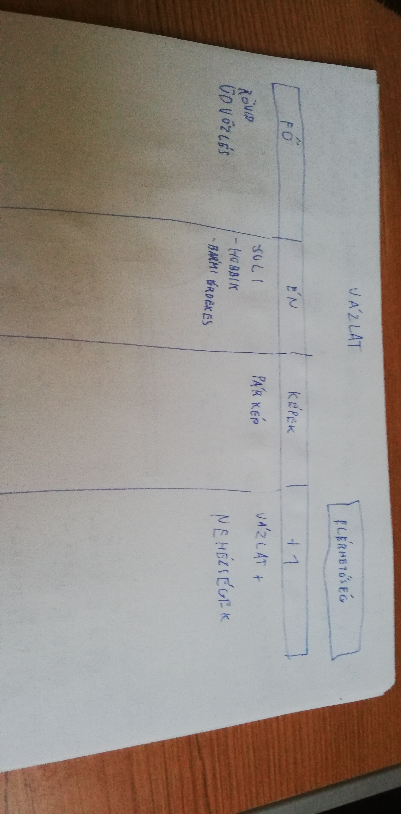

Kinézetre igazából csak az alapot tudtam ,hogy hogyan akarom és úgy gondoltam,hogy kitalálom majd menet közben.
Egyik főbb nehézség a menüsor és az elérhetőségeim fül elválasztása volt amihez fel kellett vennem egy külön divet amit q-nak neveztem el.
másik problémám volt a megfelelő képek találása és azok helyreigazítása.